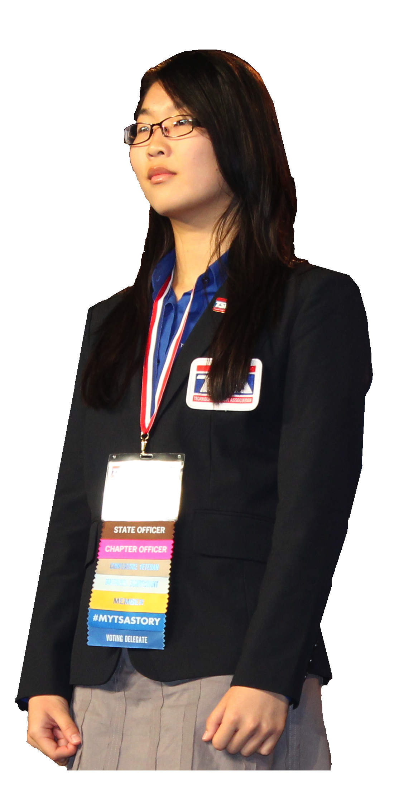

Mr. Sauve - Club Advisor
This is the person who allows IHSTSA to exist. He provides some general direction to the club, especially before officer are elected, as well as an adult. He's all about technology:, teaching several tech classes at Ithaca High School, and building jet engine in his garage. He's one suave man.
 Zak Stillman is Ithaca High School TSA's President. His two favorite events are CO2 Dragster and Video Game Design, in which his team took 7th place at the 2014 TSA National Conference. He is also a national three-time finalist in System Control Technology. He’s also a national finalist in Techno-Talk. When he’s not preparing events in TSA or coordinating chapter activities, Zak is a diligent student and a member of Ithaca High School Code Red Robotics (FIRST Team 639) and Ithaca High School’s Debate Team.
Zak Stillman is Ithaca High School TSA's President. His two favorite events are CO2 Dragster and Video Game Design, in which his team took 7th place at the 2014 TSA National Conference. He is also a national three-time finalist in System Control Technology. He’s also a national finalist in Techno-Talk. When he’s not preparing events in TSA or coordinating chapter activities, Zak is a diligent student and a member of Ithaca High School Code Red Robotics (FIRST Team 639) and Ithaca High School’s Debate Team.
 Jacob Silcoff is Ithaca High School TSA's Vice-President, with Video Game Design and Catapult, an event specific to New York State TSA. At TSA Nationals, Jacob has won in Technology Bowl, System Control (with Zak), and Video Game Design (with Zak). Outside of TSA, Jacob is a talented student, snowboarder, and the Ithaca High School Debate Team’s captain.
Jacob Silcoff is Ithaca High School TSA's Vice-President, with Video Game Design and Catapult, an event specific to New York State TSA. At TSA Nationals, Jacob has won in Technology Bowl, System Control (with Zak), and Video Game Design (with Zak). Outside of TSA, Jacob is a talented student, snowboarder, and the Ithaca High School Debate Team’s captain.
Freya Ryd is Ithaca High School TSA's Secretary. Her favorite events are Video Game Design and Photographic Technology (although she misses Techno-Talk from middle school, in which she was a two-time national finalist). Freya was also part of Zak and Jacob’s winning Video Game Design Team. Outside of TSA, Freya enjoys horseback riding and plays the violin.
Reporter: Tristan Engst is Ithaca High School TSA's Reporter. His favorite events are Webmaster and Video Game Design (he was part of Jacob, Zak, and Freya’s winning team). At Nationals, he’s also won in Technology Bowl (with Jacob). Outside of TSA, Tristan is an illustrious student and a varsity Cross Country runner.
Sophia Shi is Ithaca High School TSA's Sergeant-at-Arms, as well as New York State TSA's president. Sophia is the oldest and by far the most experienced member of the officer team, making her an invaluable asset to a young officer team which is relatively inexperienced.